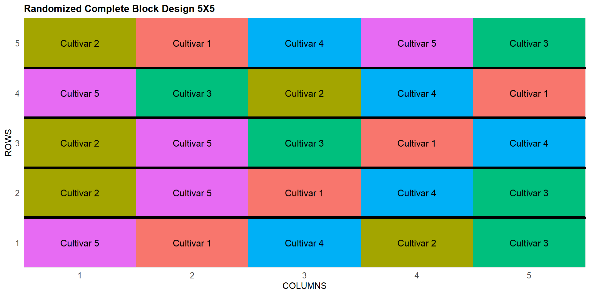
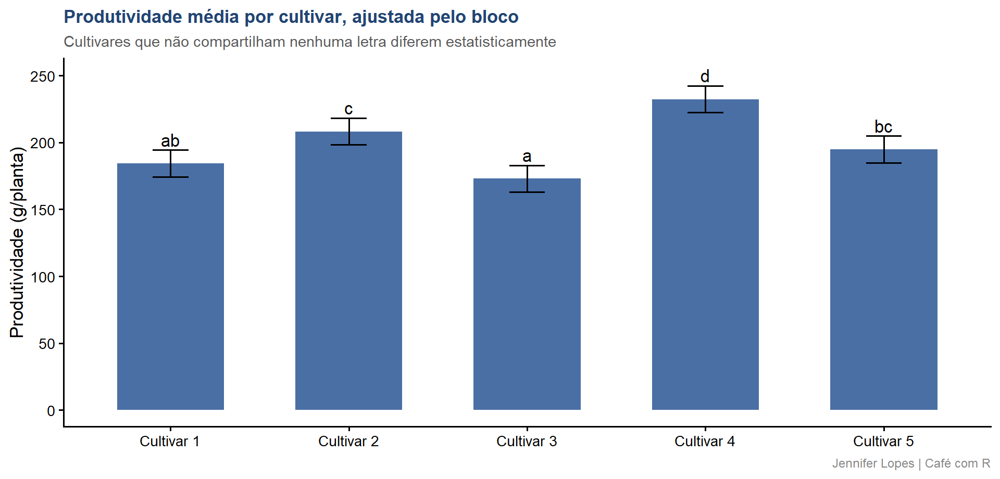

Aula 60. DBC, Delineamento em Blocos Casualizados
Controle local, croqui em blocos, ANOVA e eficiência relativa ao DIC
Acompanhe o Café com R
Que cada gole desperte uma nova ideia.
Que cada script abra uma nova conversa.
Que o Café com R se torne um ponto de encontro nosso.
SITE OFICIAL > https://jenniferlopes.github.io/meu_site/
Objetivos da aula
- Entender o conceito de controle local e por que blocar
- Gerar o croqui em blocos com
FielDHub - Conduzir a ANOVA com o efeito de bloco corretamente separado
- Calcular a eficiência relativa do DBC em relação ao DIC
- Comparar médias e evitar os erros mais comuns na interpretação do bloco
Bloco 1
O Delineamento
Conceito, controle local e por que blocar
Contexto: os mesmos 5 cultivares de milho agora são avaliados em campo, onde existe um gradiente de fertilidade do solo conhecido, uma condição que a casa de vegetação da aula anterior não tinha.
Controle local consiste em agrupar unidades experimentais semelhantes dentro de cada bloco, de forma que a variação entre blocos absorva parte da variação ambiental, deixando o resíduo mais limpo para a comparação entre tratamentos.
Blocar só melhora a precisão quando o critério de blocagem captura, de fato, uma fonte relevante de variação ambiental.
Modelo estatístico do DBC
\[Y_{ij} = \mu + \tau_i + \beta_j + \epsilon_{ij}\]
| Termo | Significado |
|---|---|
| \(\tau_i\) | Efeito do tratamento \(i\) |
| \(\beta_j\) | Efeito do bloco \(j\) |
| \(\epsilon_{ij}\) | Erro experimental |
- A diferença central em relação ao DIC é a inclusão de \(\beta_j\), que remove a variação entre blocos do resíduo antes da comparação entre tratamentos.
Bloco 2
Gerando o Croqui
FielDHub, RCBD()
Output: o croqui em blocos
ID LOCATION PLOT REP TREATMENT
1 1 loc1 101 1 Cultivar 5
2 2 loc1 102 1 Cultivar 1
3 3 loc1 103 1 Cultivar 4
4 4 loc1 104 1 Cultivar 2
5 5 loc1 105 1 Cultivar 3
10 6 loc1 201 2 Cultivar 2
9 7 loc1 202 2 Cultivar 5
8 8 loc1 203 2 Cultivar 1
7 9 loc1 204 2 Cultivar 4
6 10 loc1 205 2 Cultivar 3
- Cada bloco recebe exatamente uma parcela de cada cultivar, com a ordem de instalação dentro do bloco sorteada de forma independente entre blocos, o croqui documenta essa estrutura para a instalação em campo.
Bloco 3
Descritiva
Código: desc_stat() por cultivar e bloco
Output e interpretação
# A tibble: 5 × 11
cultivar variable cv max mean median min sd.amo se ci.t n.valid
<chr> <chr> <dbl> <dbl> <dbl> <dbl> <dbl> <dbl> <dbl> <dbl> <dbl>
1 Cultivar 1 produtiv… 10.2 204. 184. 182. 160. 18.8 8.40 23.3 5
2 Cultivar 2 produtiv… 8.36 229. 208. 204. 186. 17.4 7.79 21.6 5
3 Cultivar 3 produtiv… 6.60 185. 173. 173. 161. 11.4 5.11 14.2 5
4 Cultivar 4 produtiv… 7.60 262. 232. 228. 214. 17.7 7.90 21.9 5
5 Cultivar 5 produtiv… 9.79 218. 195. 189. 178. 19.1 8.53 23.7 5# A tibble: 5 × 11
bloco variable cv max mean median min sd.amo se ci.t n.valid
<fct> <chr> <dbl> <dbl> <dbl> <dbl> <dbl> <dbl> <dbl> <dbl> <dbl>
1 1 produtividade 10.9 214. 183. 178. 161. 19.9 8.88 24.7 5
2 2 produtividade 14.7 226. 187. 189. 160. 27.5 12.3 34.2 5
3 3 produtividade 11.9 228. 193. 182. 173. 23.0 10.3 28.6 5
4 4 produtividade 8.57 232. 211. 212. 185. 18.1 8.08 22.4 5
5 5 produtividade 13.4 262. 219. 218. 184. 29.3 13.1 36.4 5- A produtividade média cresce de forma consistente do Bloco 1 ao Bloco 5, evidência direta do gradiente de fertilidade que motivou a blocagem.
Bloco 4
ANOVA
Código: aov() com bloco no modelo
Output: tabela de ANOVA
# A tibble: 3 × 6
fonte_variacao Df `Sum Sq` `Mean Sq` `F value` `Pr(>F)`
<chr> <dbl> <dbl> <dbl> <dbl> <dbl>
1 "bloco " 4 4908. 1227. 20.9 0
2 "cultivar " 4 10526. 2631. 44.7 0
3 "Residuals " 16 941. 58.8 NA NAInterpretação, separando a soma de quadrados de bloco
A soma de quadrados de bloco é retirada do resíduo antes do cálculo do quadrado médio residual, deixando o teste F de cultivar mais sensível à diferença real entre tratamentos.
O bloco entra no modelo por convenção como efeito fixo nesta ANOVA clássica, mas é frequentemente tratado como efeito aleatório em uma abordagem de modelos mistos, tema da última aula desta sequência.
Bloco 5
Eficiência Relativa do DBC
Fórmula e conceito
\[RE \approx \frac{QM_{\text{resíduo, DIC}}}{QM_{\text{resíduo, DBC}}}\]
Essa razão simplificada compara o quadrado médio do resíduo que se obteria tratando o experimento como DIC, ignorando os blocos, ao quadrado médio do resíduo realmente obtido no DBC.
Um valor de RE acima de 1 indica que a blocagem reduziu a variabilidade residual, aumentando a precisão do experimento para o mesmo número de parcelas.
Código: cálculo
Output e interpretação
# A tibble: 1 × 3
qm_residuo_dic qm_residuo_dbc eficiencia_relativa
<dbl> <dbl> <dbl>
1 292. 58.8 4.97- A eficiência relativa aproximada é bem maior que 1, confirmando que a blocagem por gradiente de fertilidade reduziu substancialmente a variabilidade residual em relação a ignorar os blocos, ganho de precisão obtido sem aumentar o número de parcelas.
Bloco 6
Comparação de Médias
Código: emmeans e cld
Output
# A tibble: 5 × 7
cultivar emmean SE df lower.CL upper.CL .group
<fct> <dbl> <dbl> <dbl> <dbl> <dbl> <chr>
1 Cultivar 3 173. 3.43 16 163. 183. " a "
2 Cultivar 1 184. 3.43 16 174. 194. " ab "
3 Cultivar 5 195. 3.43 16 185. 205. " bc "
4 Cultivar 2 208. 3.43 16 198. 218. " c "
5 Cultivar 4 232. 3.43 16 222. 242. " d"Gráfico

Bloco 7
Erros Comuns
Erro comum 1, blocar por critério que não captura variação real
- Definir blocos por um critério arbitrário, sem relação com uma fonte real de variação ambiental, reduz os graus de liberdade do resíduo sem ganho correspondente de precisão, podendo até reduzir o poder do teste em relação ao DIC.
Erro comum 2, interpretar a soma de quadrados de bloco como se fosse tratamento
- A soma de quadrados de bloco não deve ser interpretada com o mesmo interesse científico da soma de quadrados de tratamento, o bloco existe para controle da variação ambiental, não como um fator de interesse a ser testado e discutido como resultado principal do experimento.
Resumo: DBC
| Etapa | Função no R |
|---|---|
| Croqui de campo em blocos | FielDHub::RCBD() |
| Estatística descritiva | metan::desc_stat() |
| ANOVA com bloco | aov(y ~ bloco + tratamento) |
| Eficiência relativa | Razão dos quadrados médios do resíduo |
| Comparação de médias | emmeans::cld() |
Obrigada!

Continue praticando e explorando.
Esta aula é parte do projeto Café com R. É open source. Use, compartilhe e adapte.
Siga o Café com R
Que cada gole desperte uma nova ideia.
Que cada script abra uma nova conversa.
Que o Café com R se torne um ponto de encontro nosso.
SITE OFICIAL > https://jenniferlopes.github.io/meu_site/

Jennifer Lopes | Café com R